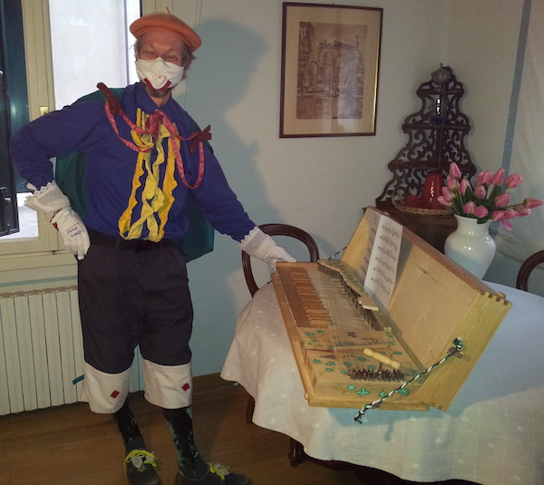
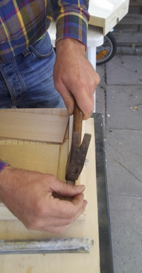
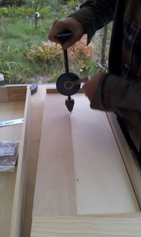
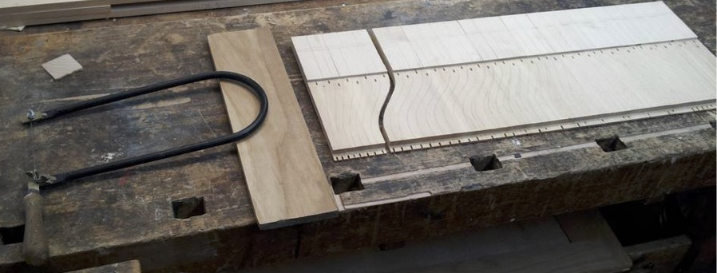
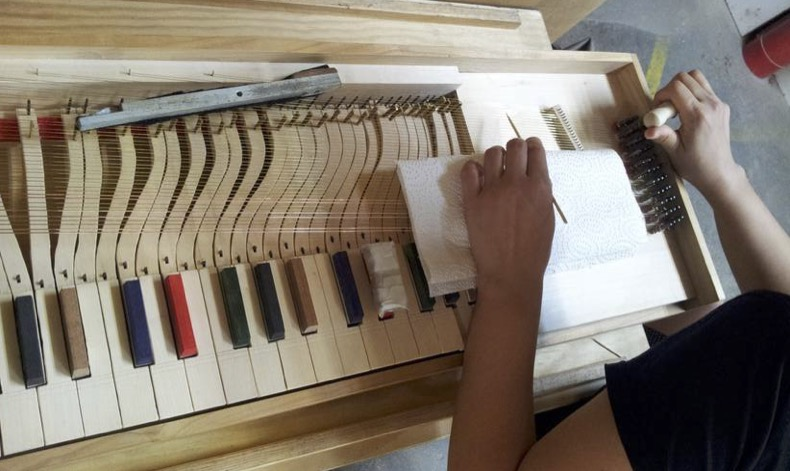
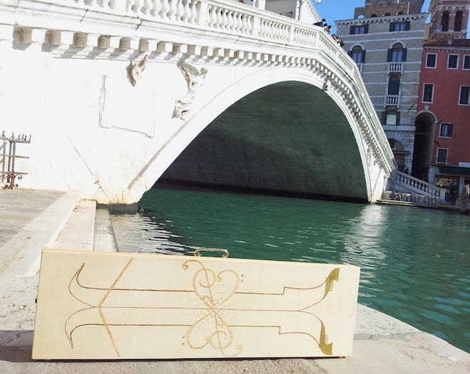

Audiosamples Concerts Clavicord at Museum Build-&PlayWorkshops Repertoire About us Contact
 |
Workshop "Build and play your own Clavichord / Travel Piano"
"クラヴィコードをご自分自身で製作し演奏しましょう"
|  |
Venice, Italy October-November (any week) Registration deadline 30. June ♪♪♪♪♪♪ Photos Venice ♪♪♪♪♪♪♪ Dresden, Germany June-August (any week) Registration deadline: 30. April ♪♪♪♪♪♪ Photos Dresden ♪♪♪♪♪♪♪ Contact: eine_floete[at]icloud.com |
About the Workshops
Build and play your own clavichord. In this 5 days course you build your personal clavichord according to the original C-c³ 2-4-fretted, approx. 300 × 100 × 980 mm, ca. 8kg easy portable. You start with a perpared base plate and lid. Everything is hand made. Please bring along hammer, fretsaw, working clothes, ear protection and lot's of enthusiam for hand made instruments and musical expression. All Materials, tuition, tools are included in the price. Meals on your own expenses. For Price information please contact us. Summer workshops in Dresden in the clavichord-garden, Winter workshops in Venice, Osaka. More Information about the Clavichord [pdf].|
 |
 |
 |
|
 |
 |
AudioSamples
F. Tàrrega - "Recuerdos de la Alhambra"
W. A. Mozart, from Don Giovanni - "Deh vieni alla finestra"
F. Tàrrega - "Asturias"
MDR-Kultur - "Hörer empfehlen Kultur"